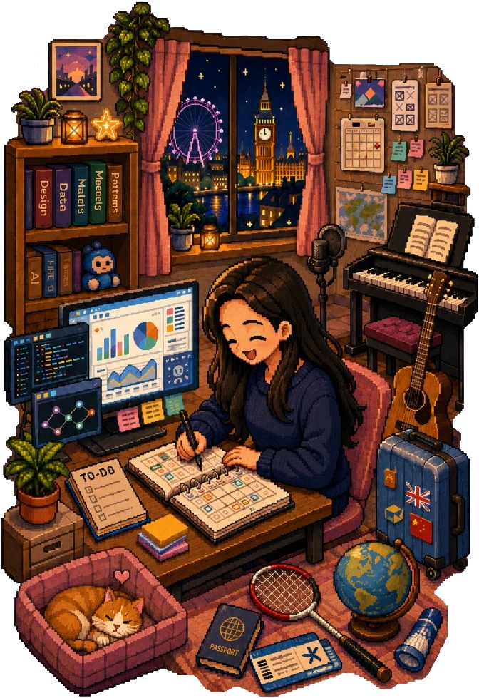
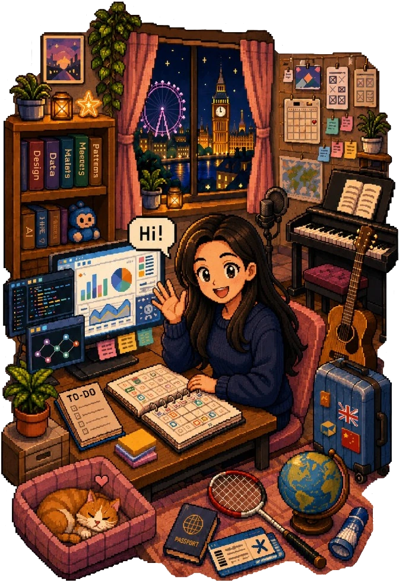

AI & Data Product · Data Scientist
"Architecting intelligent systems where deep tech meets radical empathy."


Background
Work
Tencent
AI & Data Product
NetEase Games
Project Management Intern
Education
UCL
MSc Urban Data Science
University of Dundee
BEng Architecture · Dual Degree
Wuhan University
BEng Architecture
Selected Work
Contact
![Tencent]()
![NetEase Games]()
![UCL]()
![Univ. of Dundee]()
![Wuhan University]()